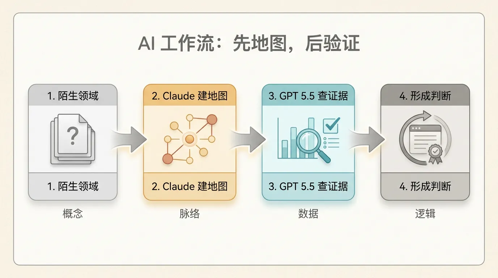
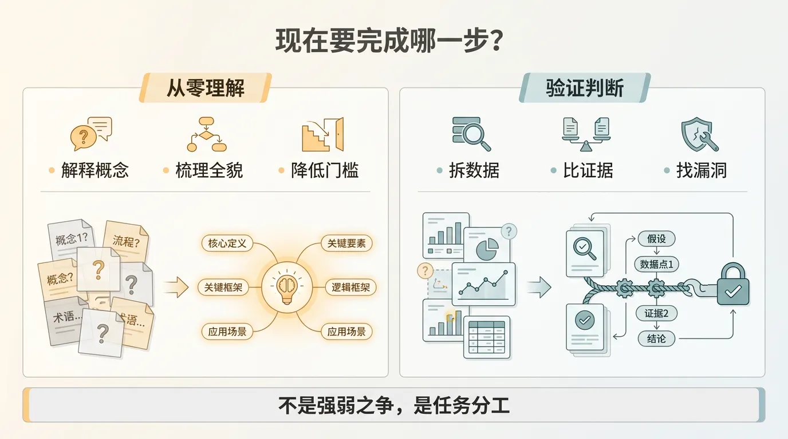
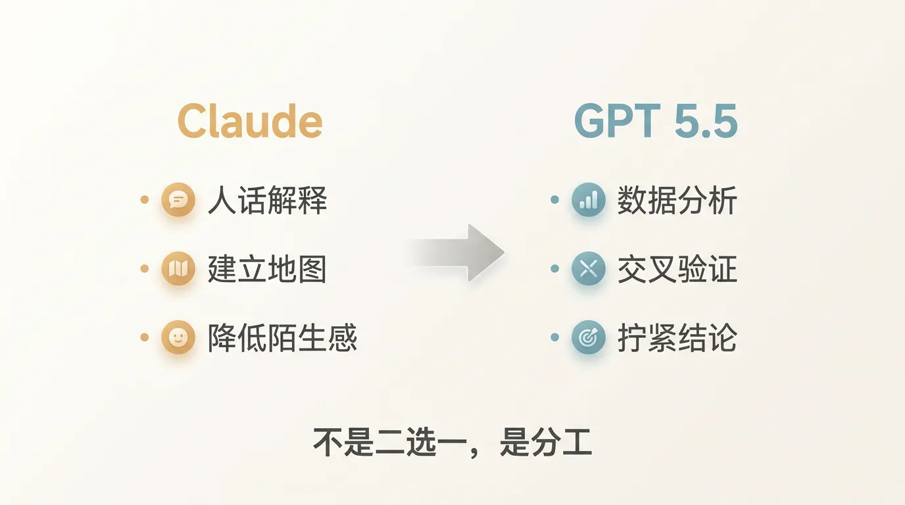
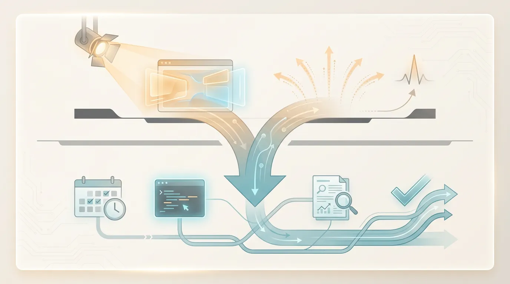
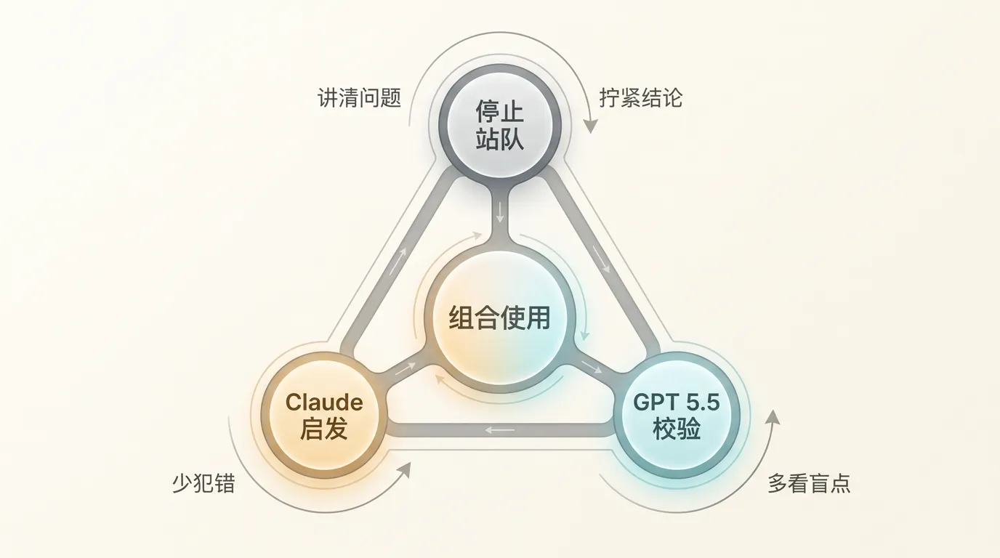

用了半个月 GPT 5.5，我反而更离不开 Claude 了
这半个月一直在用 GPT 5.5，最直接的感受是，它确实变强了。
但它没有让我放弃 Claude。
刚好相反，它让我更清楚地知道，自己为什么还需要 Claude。
我现在的工作流，大概变成了这样。研究一个陌生领域时，第一步还是交给 Claude。原因很简单，它更会把复杂东西讲成人话。你让它解释一个行业、一家公司、一条技术路线，它通常能先把全貌铺出来，让你知道这件事大概长什么样，哪些概念重要，哪些坑暂时可以先放一放。
这一步很关键。
因为刚进入一个新领域时，人最缺的不是资料，而是地图。资料到处都是，但你不知道哪一块该先看，哪一块只是噪音。Claude 在这件事上仍然很好用，它像一个比较耐心的朋友，愿意先把话说软一点，说慢一点。

等我差不多有了第一张地图，GPT 5.5 才开始上场。
它更适合做第二步，查资料、拆数据、交叉验证、找逻辑漏洞。尤其是投研场景里，有些结论不能只听起来顺，要能回到数据上反复核。GPT 5.5 在这块给我的感觉更稳一点，推理链条更紧，胡说八道的概率也低一些。
当然，它的问题也很明显。
它还是不太会说人话。
有时候你问一个挺生活化的问题，它会给你一段看起来非常完整、非常规整、也非常像机器写出来的回答。逻辑没错，但读起来费劲。你得再花一轮把它翻译成自己能消化的版本。
所以我现在不会再问，Claude 和 GPT 5.5 到底谁更强。
这个问题有点偷懒。
更合理的问题是，我现在要完成哪一步。

如果是从零理解一个领域，我会先用 Claude。它负责把陌生东西变得没那么吓人。如果是验证一个判断、拆一个财报、比几组数据、检查一条投资假设，我会用 GPT 5.5。它负责把看似合理的东西再拧紧一点。
你看，这不是二选一。
是分工。

这也是我觉得最近 AI 工具变化很有意思的地方。一个月前，很多人可能还会很自然地说，无脑 Claude 就行。现在没这么简单了。OpenAI 明显在把资源往 ChatGPT 和 Codex 这类高频生产力场景上压，Codex 的方向也很清楚，就是要正面吃掉开发者工作流这块蛋糕。Claude Code 能把 Agent 编程这件事做成，确实逼出了 OpenAI 的反应。
至于 Sora 这块，我会谨慎一点看。外面有很多关于 OpenAI 调整视频业务重心的讨论，但从用户视角看，真正能每天改变工作流的，暂时还是 ChatGPT、Codex、Claude Code 这些东西。炫技产品很容易制造声量，生产力产品才会制造依赖。

这句话可能有点残酷。
但用久了你会发现，AI 产品最后拼的不是发布会上的那一下惊艳，而是每天打开时，它能不能稳定帮你省半小时，少犯一个错，多看出一个盲点。
所以 GPT 5.5 给我的最大变化，不是让我站队。
而是让我终于停止站队。

Claude 做启发，GPT 5.5 做校验。Claude 负责把问题讲清楚，GPT 5.5 负责把结论拧结实。前者像老师，后者像分析员。谁都不完美，但放在一起，已经比单用一个舒服很多。
竞争当然是好事。
如果只剩一家模型厂商强，用户最后一定会付出代价。现在这种你追我赶的状态，反而是最健康的。东边亮一下，西边也得赶紧亮一下。
最后受益的，是每天真的要拿 AI 干活的人。